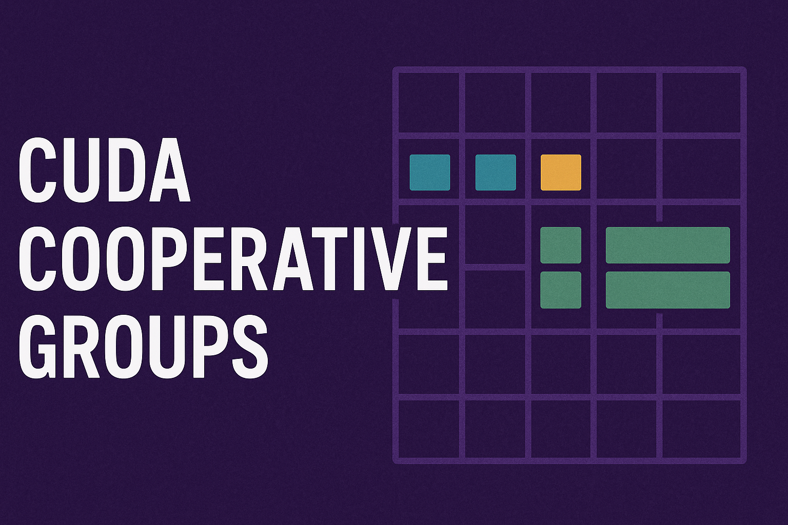
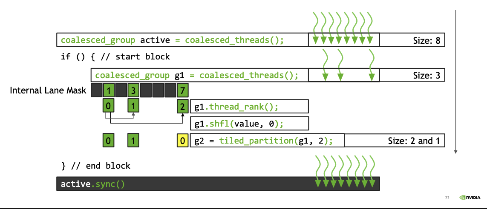

Cooperative Groups
A flexible model for synchronization and communication within groups of threads
Motivation
Till now we studied
__syncthreads()block level synchronization barrier- Shared Memory, also block level
- Warp Shuffle Premitives, they are warp level
So this allow a limited amount of functionalities for threads to inter communicate or cooperate and restrict to work at block or warp level. Cooperative Groups provide more flexibility and go beyond thread block level.
Cooperative Groups is an extension to the CUDA programming model, introduced in CUDA 9, for organizing groups of communicating threads. Cooperative Groups allows developers to express the granularity at which threads are communicating, helping them to express richer, more efficient parallel decompositions.
Before them
- You couldn’t easily synchronize smaller, logical groups of threads within a block. For instance, if you divided a block’s work into independent sections (like tiles), you couldn’t synchronize just the threads working on one tile without halting all threads in the block using
__syncthreads(). While developers could implement custom synchronization using atomic operations and shared memory flags, this was complex, error-prone, and often less efficient. - There was no built-in, safe way to synchronize all threads across all blocks within a single kernel launch. If you needed a point where all work across the entire GPU grid had to be finished before the next phase could begin (e.g., after a global reduction step before a subsequent calculation), the standard approach was:
- Finish the first kernel.
- Return control to the CPU.
- Launch a second kernel for the next phase. The boundary between kernel launches acted as an implicit grid-wide synchronization point. However, launching kernels has overhead (typically microseconds), which can become significant if you need many synchronization points. Custom attempts at in-kernel grid sync were difficult and often relied on assumptions about hardware scheduling that could lead to deadlocks (where threads wait indefinitely for others that might never run concurrently).
What Cooperative Groups are?
Cooperative groups are objects that represent a collection of communicating threads. You can obtain predefined groups or partition existing groups to create subgroups. The key is that you can then call methods on these group objects, most notably sync(), to coordinate only the members of that specific group.
// use the cooperative_groups:: namespace
namespace cg = cooperative_groups;Implicit Groups
Implicit groups represent kernel launch configurations (threads, blocks, grids) and serve as starting points for creating specialized, hardware-accelerated groups for problem decomposition.
Since creating implicit group handles is a collective operation requiring all threads to participate, they should be created upfront before any branching to avoid deadlocks and data corruption.
Thread Block
This is the implicit group of all the threads in the launched thread block
Implements the same interface as thread_group
static void sync(): synchronize the threads in the groupstatic unsigned size(): Total number of threads in the groupstatuc unsigned thread_rank(): Rank of the calling thread within [0, size-1]bool is_valid(): Whether the group violated any API costraints
Additional thread_block specific functions:
dim3 group_index()3-dimensional block index within the griddim3 thread_index()3-dimensional thraed index within the block
thread_block g = this_thread_block(); // creates a group of all threads in current block
thread_group tile32 = tiled_partition(g, 32); // partition the g into set of 32 threads (warp)
thread_group tile4 = tiled_partition(tile32, 4); // further partition `tile32` into tiles of equally 4 threadsThe tile parition size should be power of 2 and less than 1024 (this max limit varies with cc)
thread_blockis derived from more generic typethread_groupthat we used to represent tile (basically group is also a tile, check cuda c++ programming guide)
Generic Parallel Algorithms
Designing algorithms that work with any level of groups (thread block, tiles, etc)
__device__ int reduce(thread_group g, int *x, int val)
{
int lane = g.thread_rank();
for(int i=g.size()/2; i > 0; i /=2 )
{
x[lane] = val;
g.sync();
if(lane < i)
{
val += x[lane +i];
}
g.sync();
}
return val;
}
// per block
g = this_thread_block();
reduce(g, ptr, myVal);
// per-warp level
auto g = tiled_partition(this_thread_block(), 32);
reduce(g, ptr, myVal);Cluster Group
This represents all the threads launched in a single Thread Group Cluster (CC 9.0+) when a non-cluster grid is launched, the APIs assume a 1x1x1 cluster
cluster_group g = this_cluster();Most of the public API is same and matches to the Thread Block implicit group, some new are as follows:
num_blocks()Total number of thread blocks in a clusterblock_rank()Rank of the current calling blockthread_rank()Rank of the thread within the current calling blockstatic unsigned int query_shared_rank(const void *addr): Obtain the block rank to which a shared memory address belongsstatic T* map_shared_rank(T *addr, int rank): Obtain the address of a shared memory variable of another block in the cluster
namespace cg = cooperative_groups;
// ============================================================================
// EXAMPLE 1: Basic Cluster Operations and Inter-block Communication
// ============================================================================
__global__ void cluster_basics_kernel(int *data, int *results) {
// Get the cluster group handle
cg::cluster_group cluster = cg::this_cluster();
// Basic cluster info
int cluster_size = cluster.num_blocks();
int my_block_rank = cluster.block_rank();
int my_thread_rank = cluster.thread_rank();
// Each block processes different data
int tid = threadIdx.x;
int bid = blockIdx.x;
int block_size = blockDim.x;
// Shared memory for this block
__shared__ int shared_data[256];
// Initialize shared memory with block-specific pattern
if (tid < 256) {
shared_data[tid] = data[bid * 256 + tid];
}
__syncthreads();
// Now let's do inter-block communication within the cluster!
// Each block can access other blocks' shared memory
if (tid == 0) {
// Block 0 in cluster reads from all other blocks
if (my_block_rank == 0) {
int sum = 0;
for (int other_block = 0; other_block < cluster_size; other_block++) {
// Map our shared_data address to other block's address space
int *other_shared = cluster.map_shared_rank(shared_data, other_block);
// Query which block owns a shared memory address
int owner = cluster.query_shared_rank(other_shared);
// Read first element from each block
sum += other_shared[0];
}
results[blockIdx.x] = sum;
}
}
// Cluster-wide barrier - all threads in all blocks wait here
cluster.sync();
// After sync, all blocks have completed their work
if (tid == 0 && my_block_rank == 0) {
printf("Cluster %d completed with %d blocks\n",
blockIdx.x / cluster_size, cluster_size);
}
}Working with Distributed Shared Memory is very fast as compare to traditional Global memory synchronization for inter-block communication.
Grid Group
A set of threads within the same grid, guranteed to be resident on the device.
grid_group g = this_grid();static unsigned long long thread_rank(): Rank of the calling thread within [0, num_threads)
static unsigned long long block_rank(): Rank of the calling block within [0, num_blocks)
static unsigned long long cluster_rank(): Rank of the calling cluster within [0, num_clusters)
static unsigned long long num_threads(): Total number of threads in the group
static unsigned long long num_blocks(): Total number of blocks in the group
static unsigned long long num_clusters(): Total number of clusters in the group
static dim3 dim_blocks(): Dimensions of the launched grid in units of blocks
static dim3 dim_clusters(): Dimensions of the launched grid in units of clusters
static dim3 block_index(): 3-Dimensional index of the block within the launched grid
static dim3 cluster_index(): 3-Dimensional index of the cluster within the launched grid
Ensure device supports the cooperative launch api
int dev = 0;
int supportsCoopLaunch = 0;
cudaDeviceGetAttribute(&supportsCoopLaunch, cudaDevAttrCooperativeLaunch, dev);CUDA Occupancy and Grid-Level Synchronization Constraints:
Each SM has limited thread capacity (e.g., 2048 threads/SM), giving a total system capacity of num_SMs × threads_per_SM. While launching many threads seems beneficial, CUDA schedules thread blocks in streaming fashion as SMs become available, so excessive thread launches don’t improve performance due to occupancy limits. Grid-stride loops are more efficient as they reuse threads across data portions instead of creating thread explosion.
The critical issue arises with grid-level synchronization: if all active SMs hit a synchronization barrier while other thread blocks wait in the scheduling queue, those waiting blocks cannot proceed, creating deadlock. This means grid size cannot exceed occupancy-determined limits for cooperative kernels.
Occupancy calculations answer “how many threads can actually execute simultaneously per SM based on kernel design,” which determines the maximum safe grid size formula: max_safe_grid_size = num_SMs × actual_threads_per_SM_for_this_kernel. This occupancy-based upper bound is essential for any kernel requiring grid-level synchronization to prevent deadlock scenarios.
CUDA provides the API to fetch number of concurrent thread blocks per SM.
cudaOccupancyMaxActiveBlocksPerMultiprocessor// Device code __global__ void MyKernel(int *d, int *a, int *b) { int idx = threadIdx.x + blockIdx.x * blockDim.x; d[idx] = a[idx] * b[idx]; } // Host code int main() { int numBlocks; // Occupancy in terms of active blocks int blockSize = 32; // These variables are used to convert occupancy to warps int device; cudaDeviceProp prop; int activeWarps; int maxWarps; cudaGetDevice(&device); cudaGetDeviceProperties(&prop, device); cudaOccupancyMaxActiveBlocksPerMultiprocessor( &numBlocks, MyKernel, blockSize, 0); activeWarps = numBlocks * blockSize / prop.warpSize; maxWarps = prop.maxThreadsPerMultiProcessor / prop.warpSize; std::cout << "Occupancy: " << (double)activeWarps / maxWarps * 100 << "%" << std::endl; return 0; }Total Number of blocks that can be launched concurrently in a grid can be
total_no_of_SM * numBlocksthis is a requirement for cooperative grid launch.Grid-Stride loop methodology works nicely with this requirement.
__global__ void kernel(...) { grid_group grid = this_grid(); // load data // loop - compute, share data grid.sync(); // device wide execution barrier }- This kernel should be launched via
cudaLaunchCooperativeKernel(...)instead of<<<...>>>(three chevron)
/// This will launch a grid that can maximally fill the GPU, on the default stream with kernel arguments int numBlocksPerSm = 0; // Number of threads my_kernel will be launched with int numThreads = 128; cudaDeviceProp deviceProp; cudaGetDeviceProperties(&deviceProp, dev); cudaOccupancyMaxActiveBlocksPerMultiprocessor(&numBlocksPerSm, my_kernel, numThreads, 0); // launch void *kernelArgs[] = { /* add kernel args */ }; dim3 dimBlock(numThreads, 1, 1); dim3 dimGrid(deviceProp.multiProcessorCount*numBlocksPerSm, 1, 1); cudaLaunchCooperativeKernel((void*)my_kernel, dimGrid, dimBlock, kernelArgs);
Motivation
Such fine level access allow us to perform specialization tasks, for example I can make my one thread-block to do something and other to do something else (thread block level specialization)
Warp Specialization Identify the id of each unique warp and one does something than other. These ideas help in developing algorithms that work like Master-Slave or Producer Consumer. Which in turns maps the idea of Persistent Kernels (kernel which stays for long period)
For example: A master entity in my kernel might be looking at the queue only and then distributing the queue items to the slave entities in my kernel (which process them) to another end of queue it can be host of another GPU. And this also gives a good motivation to why we would be needing the grid wide sync
Another reason we might want to have persistent kernels because of the re-usage of kernel state (shared memory, registers, etc)
Explicit Group
Thread Block Tile
A subset of thread blockm divided into tiles in row major order. This is another way of creating them in tempalte manner, but the size should be known at compile time contants (This provides more functionality) + fast (size known at compile time)
thread_block_tile<32> tile32 = tiled_partition<32>(this_thread_block());
thread_block_tile<4> tile4 = tiled_partition<4>(this_thread_block());
thread_block_tile<1> this_thread(); // single threaded groupAdditional functionality (but on group level)
- Similar to warp shuffle primitives
shfl()shfl_down()shfl_up()shfl_xor()
- Similar to warp voting primitives (check cuda programming guide)
any()all()ballot()
- Similr to warp-matching primitives
match_any()match_all()
template <unsigned size>
__device__ int tile_reduce(thread_block_tile<size>, int val)
{
for(int i=g.size()/2; i > 0; i /=2 )
{
val += g.shfl_down(val, i); // directly summing to the val of next (i + threads) in group
}
return val;
}
// per tile of 16 threads
thread_block_tile<16> g = tiled_partition<16>(this_thread_block());
tile_reduce(g, myVal);Coalesced Groups
Discover a set of coalesced threads, i.e. a group of converged threads executing in SIMD
In CUDA’s SIMT architecture, at the hardware level the multiprocessor executes threads in groups of 32 called warps. If there exists a data-dependent conditional branch in the application code such that threads within a warp diverge, then the warp serially executes each branch disabling threads not on that path. The threads that remain active on the path are referred to as coalesced. Cooperative Groups has functionality to discover, and create, a group containing all coalesced threads.
coalesced_group active = coalesced_threads();
// Example: Atomic Aggregation
inline __device__ int atomicAggInc(int *p)
{
coalesced_group g = coalesced_threads();
int pre;
if(g.thread_rank() == 0)
prev = atomicAdd(p, g.size());
prev = g.thread_rank() + g.shfl(prev, 0); // Note: this g.shfl is actually __shfl_sync's alias
return prev;
}Apart fromt the above content there are synchronization and other primitives that I am avoiding in this article, as they are intuitively simple and can be read/reference from the CUDA programming guide.